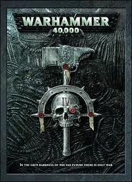

Warhammer 40k
Warhammer 40k in based in the future the year is 40,000 as 40k standards for, And basically these is alway WAR going on in the unverise*. Same as fantasy warhammer there is many different Army lists/ Races to pick from, The Space Marines being the most common pick, Orc's, Eldar, Nercon, Tua, Choas, Tyrdnids*, Impriumal Guard. Each army have their own uquie advanages and disadvanages, different Tanks, troops and Leaders
Why play warhammer 40k
Warhammer 40k has alot of interest story's about the far far future, a lots of high techology weapons, armour, battleship's and war-machine's each having unquie stories.